This project implements a rasterizer that renders images using triangles with antialiasing techniques (such as supersampling, pixel sampling, and level sampling) and the ability to transform.
We created a helper function called inside: we used the line formula shown in lecture to check if the point was above all three lines of the triangle, and if it is, then the point is within the triangle. Then to determine the winding order, we used the inside function on the centroid, which is guaranteed to be inside the triangle. If the centroid was inside using counterclock wise winding order, then the winding order was correct; if the centroid was outside, then we simply used the other winding order. Using the winding order, we created our three lines/vectors of the triangle. To rasterize the triangle, we find the minimum and maximum x and y coordinates of the triangle verticles to create a bounding box. We iterated over coordinates within the bounding box and checked if each (x + 0.5, y + 0.5) coordinate was inside the triangle. If it was, we would color in (x,y); otherwise, we wouldn't.
Our rasterization algorithm is no worse than one that checks each sample within the bounding box of the triangle, as our algorithm uses this method. We find the minimum and maximum x and y coordinates that the triangle can be in, and we iterate over those x and y coordinates.
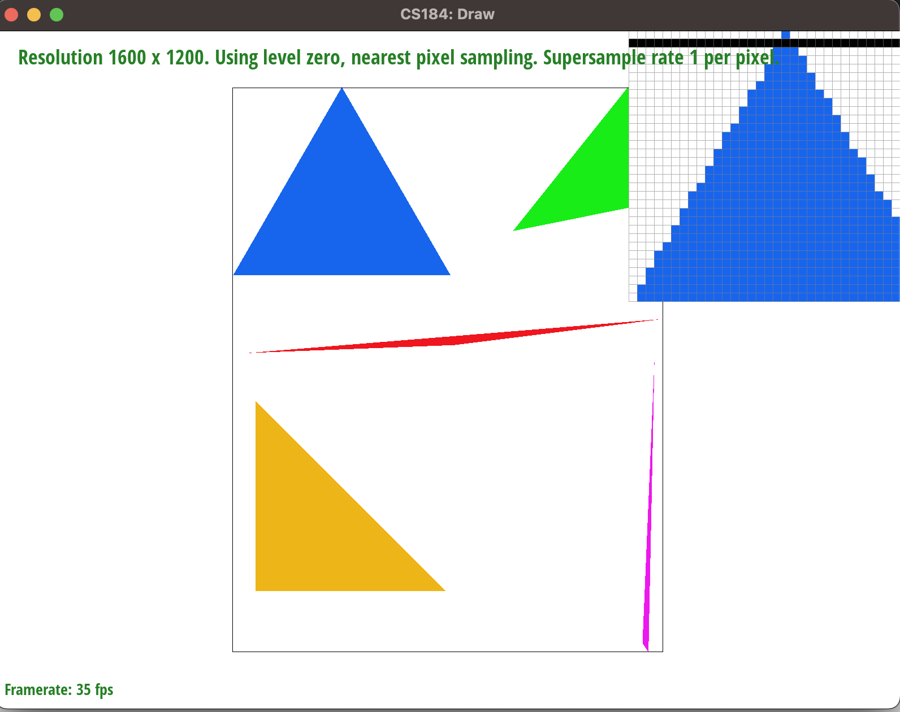Our approach for supersampling was to split each pixel into smaller squares based on the sampling rate. Therefore, to store the color values of these smaller squares, we need to scale our sample_buffer according to the sample_rate (which was like rasterizing the image at a "higher resolution"). And instead of offsetting with 0.5, we need to account for sampling rate so that we use the middle of the smaller squares during inside-triangle check. Same as task 1, we check if the offsetted point was inside the triangle. Instead of simply coloring in (x, y), we stored the sampled values into sample_buffer. Finally, in resolve_to_framebuffer, we take the average of the squares within a pixel and color the corresponding pixel with the resulting value. Supersampling renders the image at a higher resolution and then downsampling it to the desired resolution; it is useful because it helps reduce aliasing and jaggies, which makes our image look more smoother and visually pleasing.
When our sampling rate is 1, we see that the corner of the triangle has jaggies, each pixel is either purple or white with no in-between. When our sampling rate is 4, we see that there are still some jaggies, but each pixel can now be in-between purple and white. When our sampling rate is 16, we can see that each pixel has more freedom to be in-between the purple and white colors. These results are observed because when we increase our sampling rate, we are sampling smaller squares within a pixel, and we take the average value of those squares within a picture to get our final color. When we increase our sampling rate, we are able to represent a higher variety of colors because we have more squares.
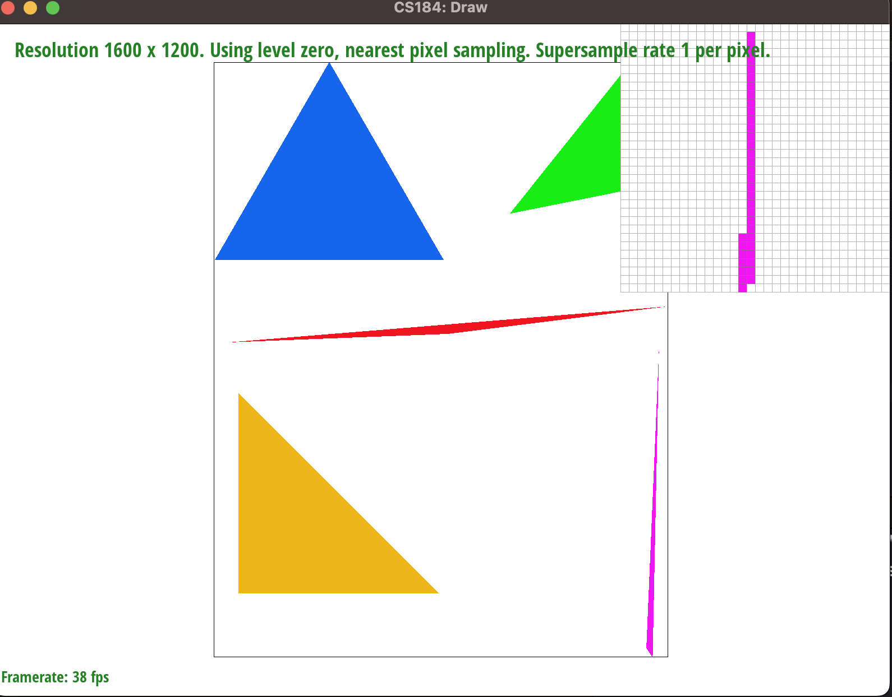 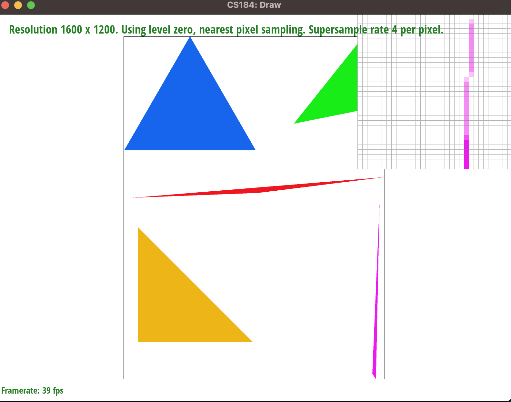 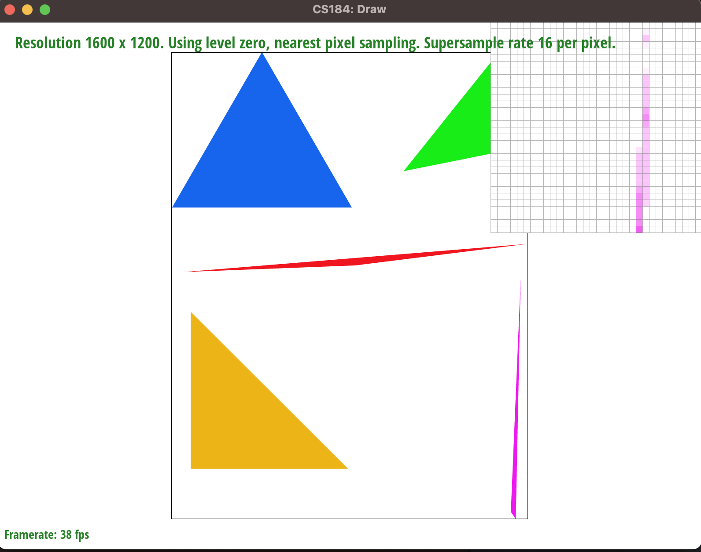In order to create this running robot, we performed a sequence of rotations followed by translations. The transformations happen in a stack-like fashion that we saw in lecture. We draw the torso and the head; these body parts required no additional transformations than what we had in the original robot. For the left and right legs, we rotate the left and right lower legs before translating those parts; the upper left left only needed to be translated to the appropriate location, whereas the upper right leg required a rotation and a translation. Both the left and right forearms also required a rotation followed by a translation, whereas the upper arms only required a transformation. After all this was done, we applied a final rotation and translation to the entire robot. When executing, the body parts lower in the hierarchy (such as arms and legs) complete their transformation first before the head and torso.
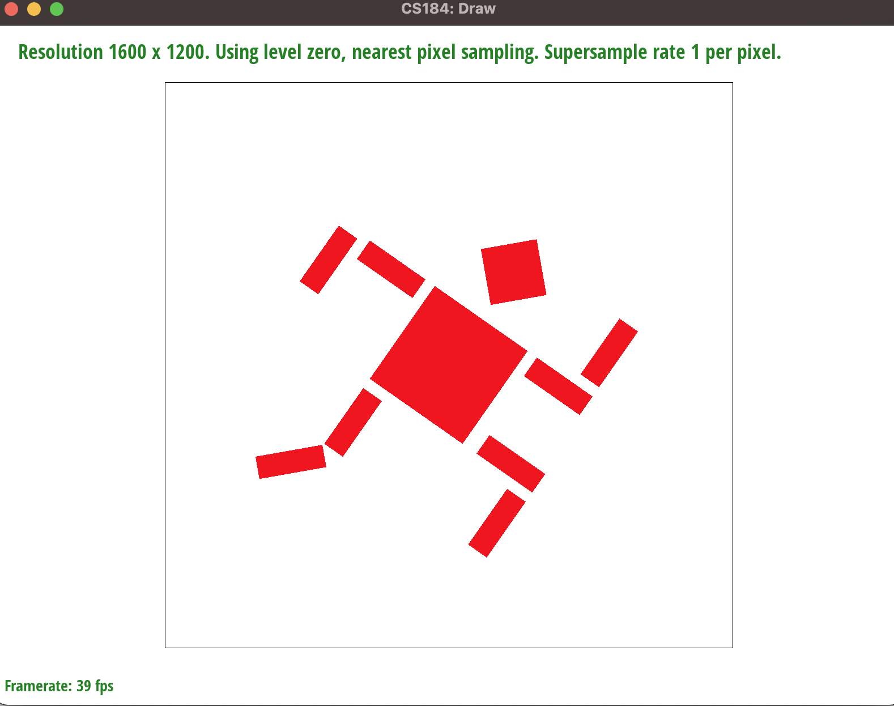Barycentric coordinates are used to represent a point relative to three vertices of the triangle. The position of the point is essentially a weighted average of the vertices based on its distance from them. In the triangle below, each vertex is plotted with a different color. The top left vertex is colored red, the top right vertex is colored green, and the bottom vertex is colored blue. If we pick a vertex and move away from that vertex and closer to the center, we see that the color of the triangle changes, and appears to be a weighted average of all three colors. For example, when we start from the blue vertex and move closely along the edge that connects the blue vertex to the red vertex, we can see that in the midpoint, we have a purplish shade, which is a mixture of the red and blue. As another example, when we move from the blue vertex to the middle, we can see that the blue shade fades away eventually and the color starts to blend in with the green and red.
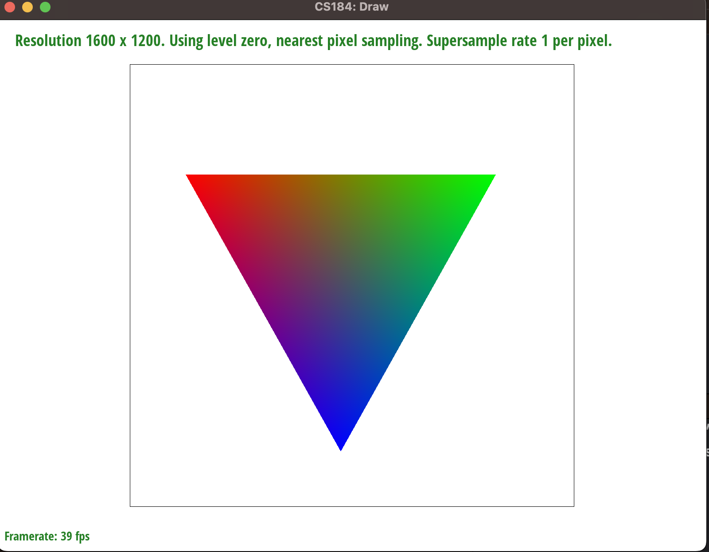 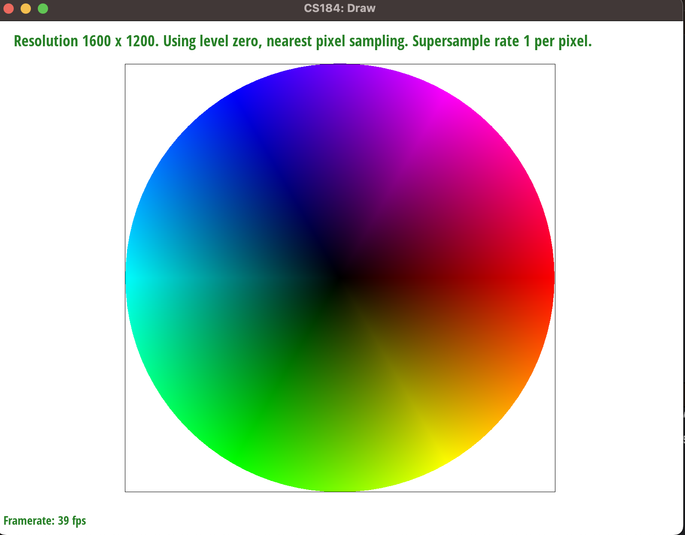Pixel sampling uses original image data to determine pixel color value. There are two pixel sampling methods: nearest sampling and bilinear sampling. Nearest sampling finds the closest pixel to the one being rendered and selects its color from the original image. Bilinear sampling accounts for the color values of the four nearest pixels in the original image. Then use linear interpolations to take the weighted average of these four values.
In our implementation of pixel sampling, we create a bounding box and perform supersampling just like previous tasks. Then, we find the corresponding barycentric coordinates of the pixel using the formula given in lecture. Scale the coordinates relative to the mipmap width and height. Depending on which pixel sampling is being used, the remaining algorithm differs. For nearest sampling, we round the scaled coordinates to find the nearest pixel and retrieve its color. For bilinear sampling, we find the 4 neighboring pixels by taking the floor and ceil of the coordinates. Do two horizontal linear interpolations using these 4 pixels as shown in the lecture. Then use these results to do a final vertical linear interpolation to retrieve the weighted color value.
When there are rapid changes in color, bilinear sampling produces much smoother images. Nearest sampling is more blocky and jaggy. This is because bilinear sampling takes the weighted average of nearby neighboring pixels and chooses intermediate color values that transition between one color to another nicely. Nearest sampling, on the other hand, simply picks the color of the closest pixel, so it will result in more noticeable jagged edges.
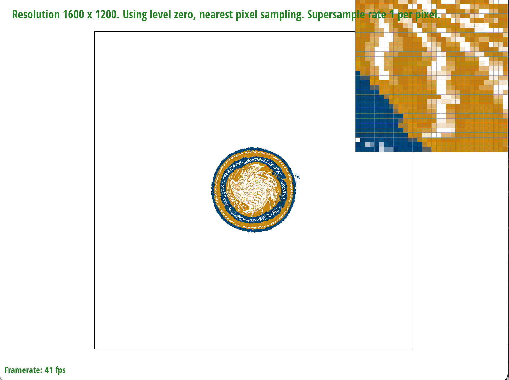 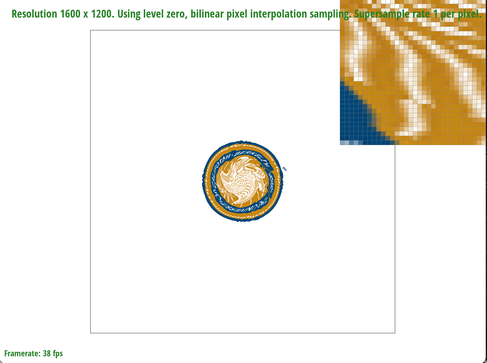At a higher sample rate, nearest sampling produces smoother edges. This is the result of supersampling as explained in task 2. However, its difference from bilinear sampling is still very apparent; bilinear sampling takes account into the distance between pixels and use the proportional distance to determine more accurate intermediate color values.
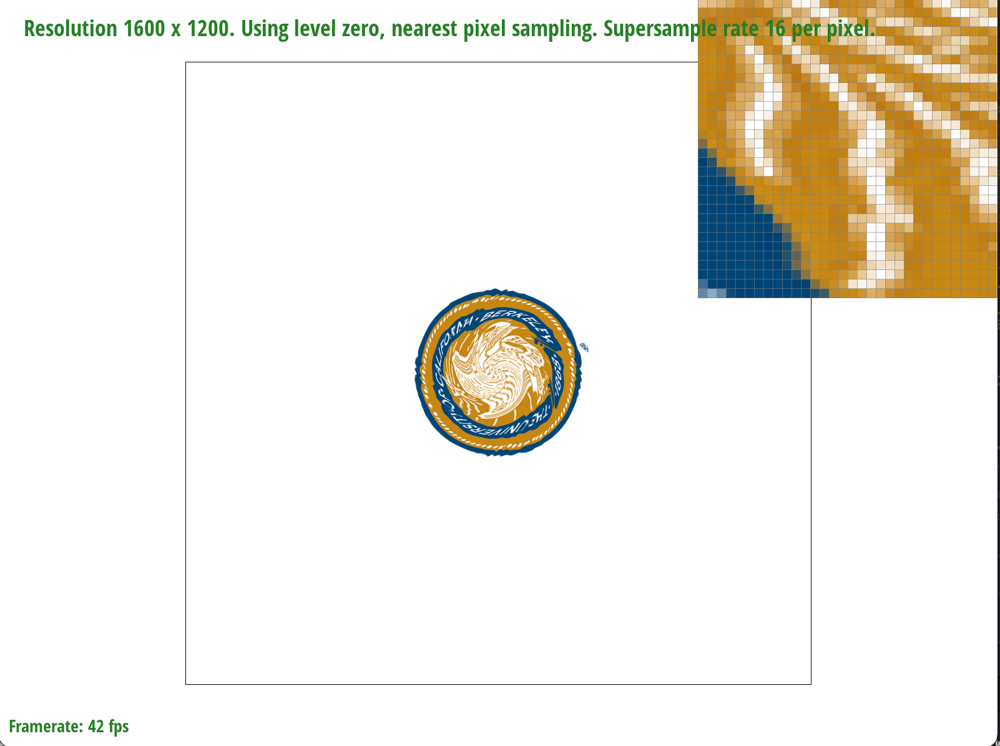 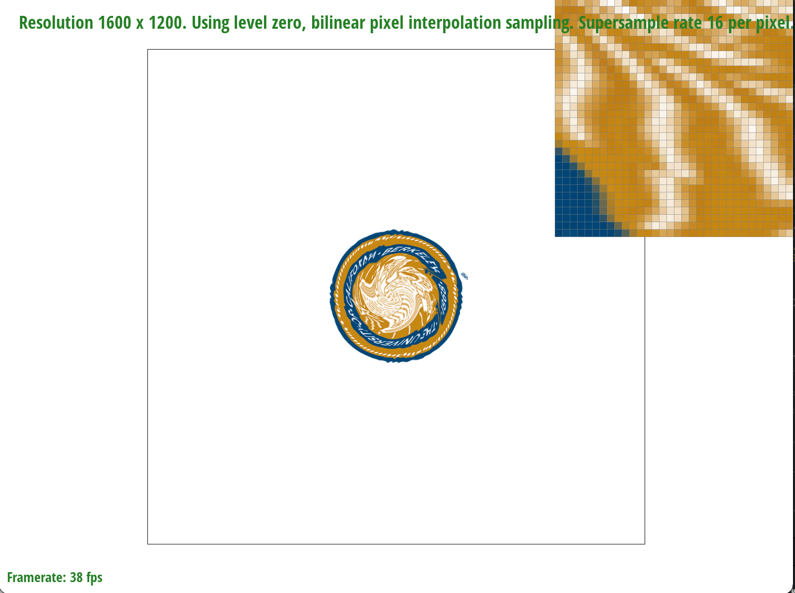Level sampling sample data at different levels of detail. For textures that are closer to the camera, higher levels of detail are used (ie. bigger mipmap). For textures that are further away, lower levels of detail are used (ie. smaller mipmap). This helps to conserve memory and processing resources and create better images.
Same as before, we calculate barycentric coordinates for pixel (x, y). Now we also find the barycentric coordinates for (x+1, y) and (x, y+1). Then, the algorithm differs depending on the sampling method. For level zero sampling, we set level equal to zero and uses the highest resolution mipmap to perform pixel sampling. For nearest sampling, we calculate mipmap level using the formula given in lecture, and then round the resulting value to get the nearest level. For linear sampling, we also calculate mipmap level, but we take the floor of the resulting value to get the lower level. Then add one to it to get the higher mipmap level. Perform pixel sampling using each level and do linear interpolation with the results to get the weighted average.
Supersampling is the slowest technique because it not only require multiple samples per pixel, but also at a higher resolution than the final output. Thus, it also uses the most memory. However, supersampling generally provides the most antialiasing power because it uses the highest resolution. Pixel sampling is the fastest technique and uses the least amount of memory. However, it provides the least antialiasing power. Level sampling is the most cost-effective. It uses more memory than pixel sampling because it needs to store mipmaps of different levels, but less than supersampling because the mipmaps are lower resolutions. It is more efficient by using lower resolution for faraway objects and higher resolution of closer ones that require more details. It is generally a happy medium between pixel sampling and supersampling in providing antialiasing.